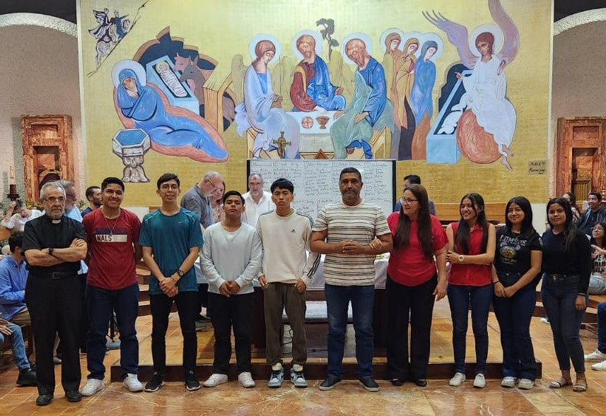
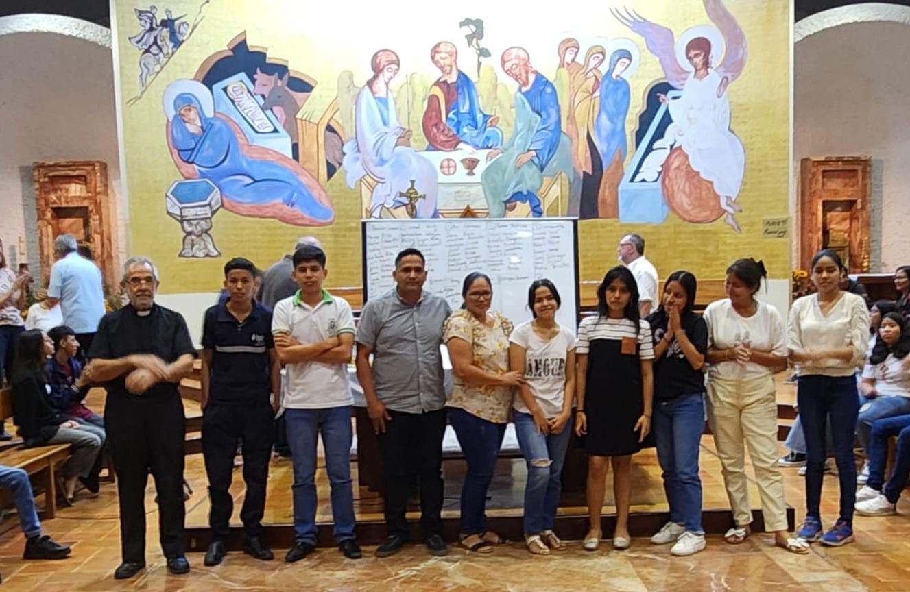
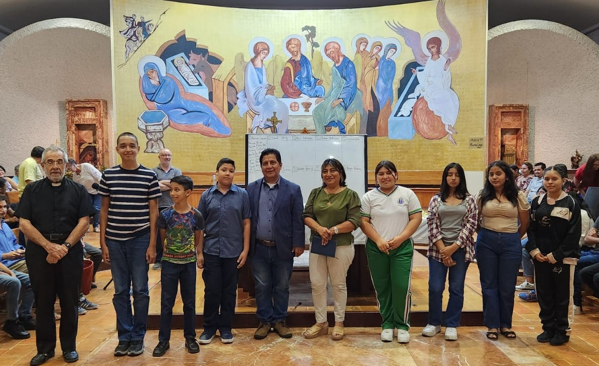
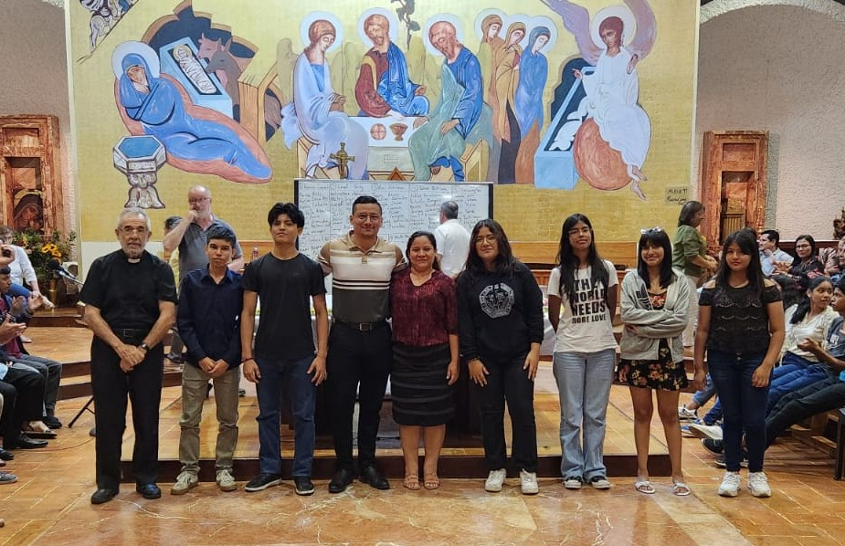
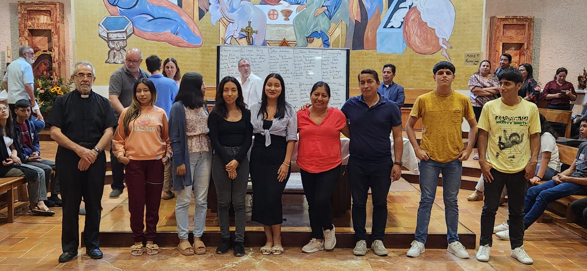
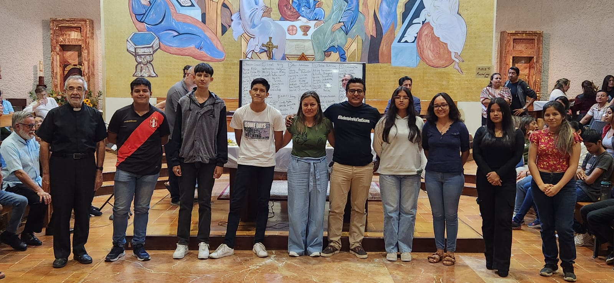

Bienvenidos
La Pastoral de Post-Confirmación es un espacio donde los jóvenes descubren la alegría de vivir la fe, acompañados por matrimonios cristianos y guiados por nuestro párroco el P. Julián Ballesta. En mayo de 2024, nuestra parroquia Santo Tomás de Aquino recibió a hermanos del Camino Neocatecumenal de Roma, entre ellos el sacerdote italiano Gianvito Sanfilippo y el matrimonio de Paolo y Claudia, quienes nos animaron a iniciar este itinerario para los jóvenes confirmados.
Formación
Profundizamos en los Mandamientos, Virtudes y Obras de Misericordia.
Comunión
Los jóvenes se reúnen en casas y en la parroquia para compartir la fe.
Campamento
Al final del curso, un encuentro de 5 días con actividades y catequesis.